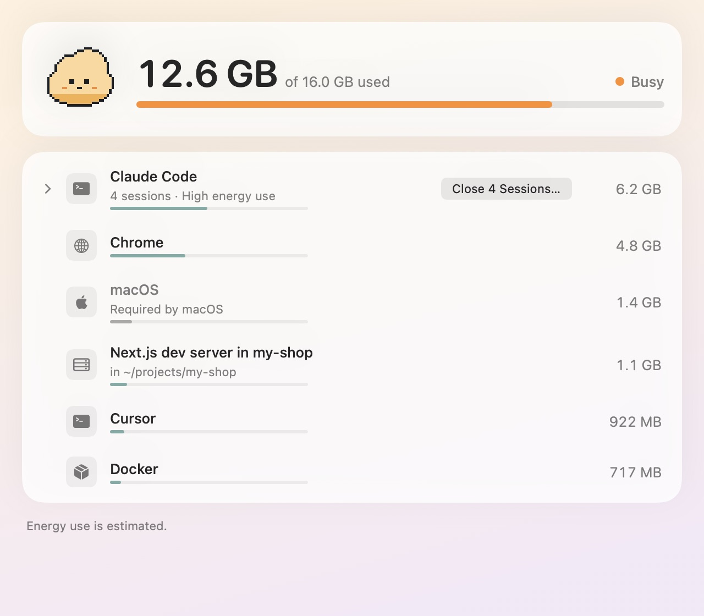
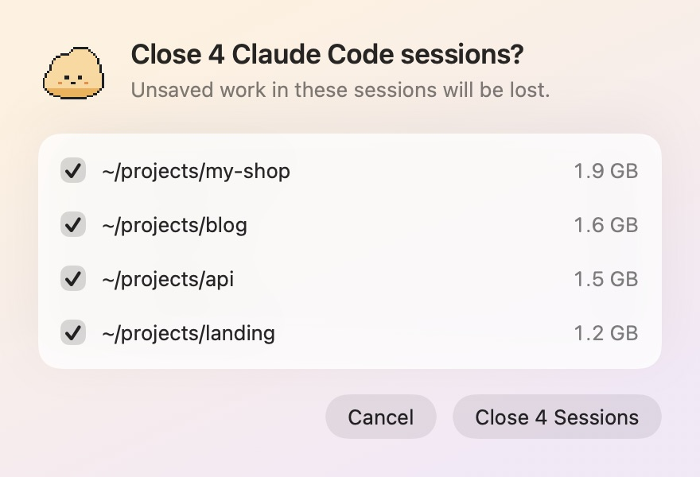
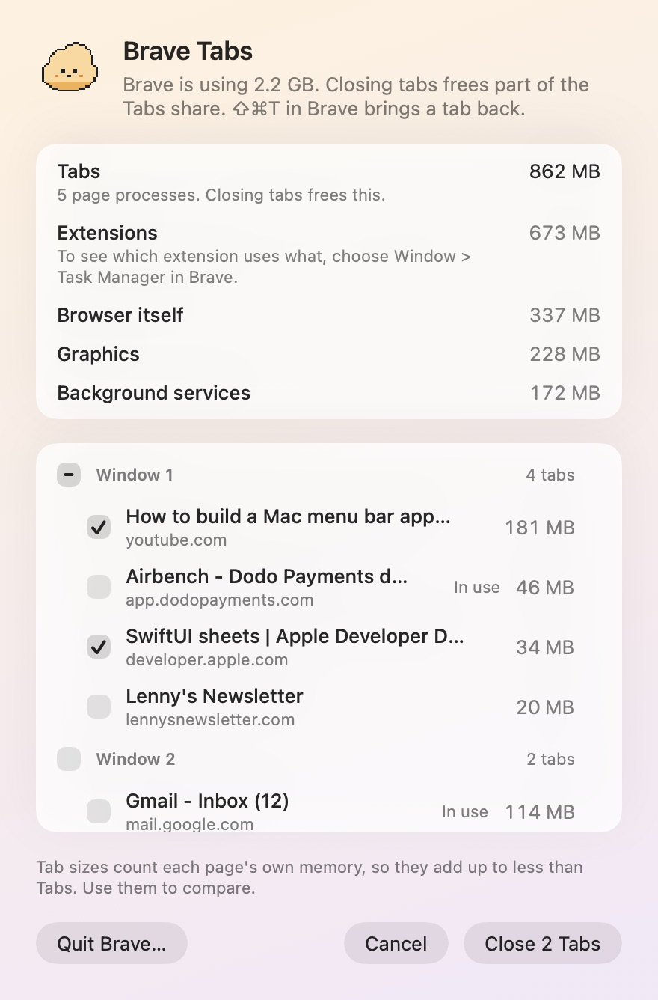
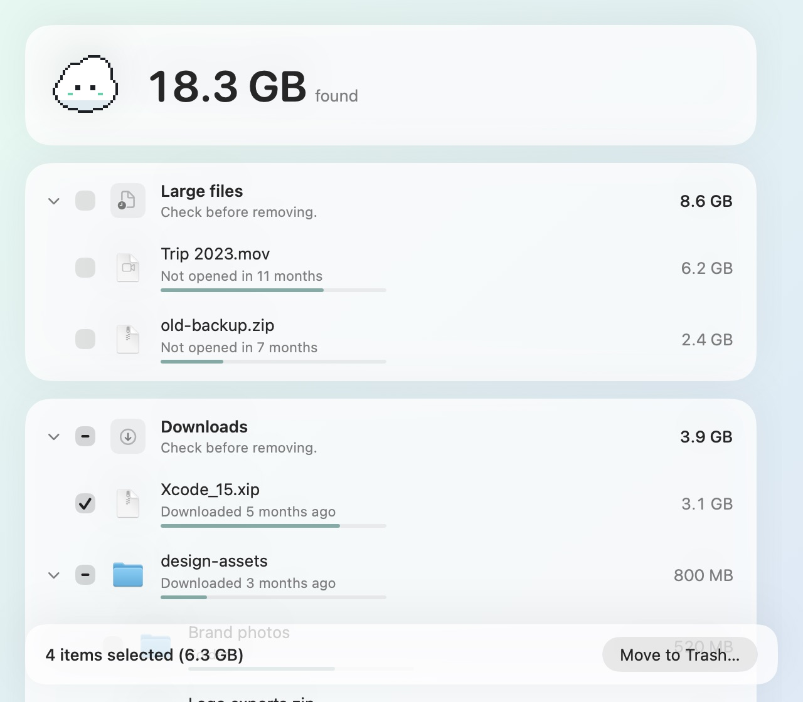
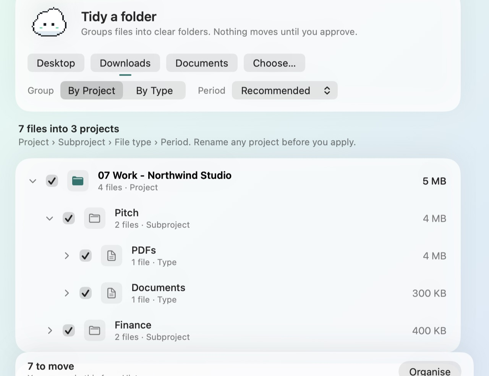

Your Mac, breathing easy.
Airbench shows which apps, coding agents and browser tabs are using your memory, finds what's filling your disk, and tidies messy folders. Nothing moves or closes until you say so.
Free during the beta · macOS 13 or later · Apple silicon and Intel

Plenty of memory free
See it in 48 seconds.
Four Claude Code sessions. Two dev servers. Forty tabs.
Airbench groups processes the way you think about them: Claude Code and Codex by session and folder, dev servers by project, every browser as one entry. Close the sessions you're done with; it asks first and names exactly what will close.
Claude Code · 4 sessions · 6.2 GB

Keep Brave open. Close the tabs you're done with.
Review Tabs lists each window's tabs with their size, heaviest first, and leaves the tab you're looking at alone. It also shows where the browser's memory really goes.
Brave on a real Mac, 2.3 GB
- Tabs 0.9 GB
- Extensions 0.7 GB
- Browser itself 0.35 GB
- Graphics 0.24 GB
Works with Brave, Chrome, Edge and Safari.

Free space without the fear.
Airbench finds caches, old installers, leftovers and big files, with a plain reason for each. You tick what goes. Everything goes to the Trash, and History can put it back.

Downloads, sorted by project.
Airbench groups loose files by project, then type and month, quarter or year. A folder only appears once it has 10 or more files. It flags exact duplicates. Preview first, rename anything, undo from History. Folders you made are left as they are.

Meet Puff.
Puff sits in the corner of your screen and changes colour with memory pressure. Hover for a one-line note. Click to open Airbench. Hide it any time.
A few promises.
- Nothing closes or moves without your OK.
- Everything removed goes to the Trash, so you can put it back.
- No "free RAM" button: macOS manages memory well, Airbench shows you what's using it.
- Your files never leave your Mac.
- No account.
- A one-time price, no subscription.
Airbench beta 0.1.0
Free during the beta · macOS 13 or later · Apple silicon and Intel
- Unzip and drag Airbench to Applications.
- Open it. macOS says it can't check the app because the beta isn't notarised yet. Click Done.
- Open System Settings > Privacy & Security, click Open Anyway, then open Airbench again.
Usage sharing is off unless you turn it on during setup.
Questions.
Is it safe?
Airbench asks before it closes anything or moves a file. What it removes goes to the Trash, and History can put it back. Your files stay on your Mac.
Does it free up RAM?
No. It shows what is using memory, and lets you close it.
Why isn't it on the Mac App Store?
The App Store sandbox blocks the cleaning Airbench does.
Does it work on Intel Macs?
Yes. Airbench runs on Apple silicon and Intel, on macOS 13 or later.
What does it send?
Nothing about your files. Optional anonymous usage counts stay off during the beta unless you opt in.
What will it cost?
A one-time price, announced at launch. Free during the beta.